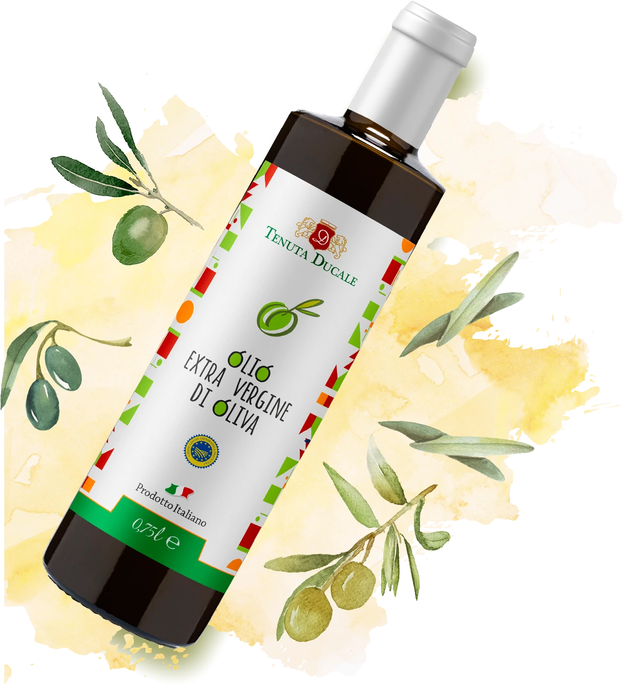
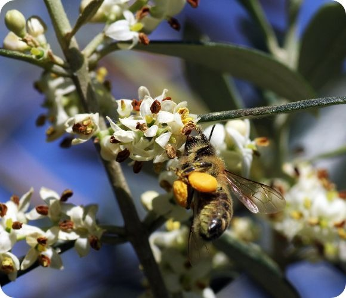
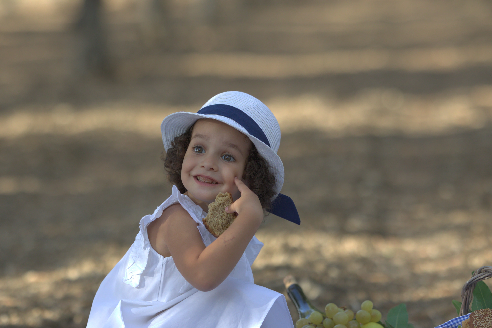

Il Nostro Olio Extravergine
Il sapore unico dell'olio extra vergine di oliva Tenuta Ducale è il risultato di una cura e attenzione che accompagnano ogni fase della sua produzione. L'olio proviene esclusivamente dalle olive coltivate nei nostri uliveti e raccolte a mano ancora verdi, appena all'inizio della fase di maturazione (invaiatura), quando si ha il maggior accumulo di componenti volatili e di polifenoli.
La molitura è effettuata entro poche ore dalla raccolta e l'olio viene stoccato in fusti inox a temperatura controllata, in attesa dell'imbottigliamento, senza subire alcun trattamento chimico. Questo olio extra vergine di oliva è il frutto di un lavoro artigianale che si tramanda da generazioni e che dà vita a un prodotto di eccellenza.

Le Nostre Piante
I nostri uliveti sono esclusivamente di Nocellara del Belice, cultivar autoctona della Valle del Belice, utilizzata sia per la produzione di olio che come oliva da mensa.
La pianta, talvolta secolare, ha caratteristiche di auto-incompatibilità: nei nostri appezzamenti è possibile trovare varietà di piante impollinatrici come la cultivar Biancolilla, la Giarraffa o addirittura alberi selvatici di olivo comunemente chiamati "Oleastro", per far sì che i fiori — o "zagare" — della pianta possano essere impollinati, rendendo così possibile la produzione di olio di oliva.
Certificazioni e Analisi
Trasparenza e qualità certificata: consulta e scarica le analisi chimiche e sensoriali dei nostri olii, anno per anno.
Acidità e Perossidi
Polifenoli Totali
Analisi Sensoriale
Dal Campo alla Bottiglia
Ogni goccia racconta il percorso delle nostre olive: dalla brucatura a mano fino al frantoio, seguendo l'antica tradizione di famiglia.

Raccolta
La nostra azienda segue l'antica tradizione dei nostri nonni. Raccogliamo le olive nel periodo che va da ottobre a novembre esclusivamente con brucatura a mano, utilizzando cassette forate (Bins) per favorire la ventilazione durante il trasporto sino al frantoio. Il processo di estrazione dell'olio avviene entro e non oltre le 12 ore dalla raccolta, in modo da conservarne intatti i profumi e le pregiate caratteristiche organolettiche.
Molitura
Il processo di molitura avviene in un moderno frantoio con un sistema di estrazione meccanica a ciclo continuo che garantisce l'originalità del prodotto. Le olive vengono scaricate in una vasca di accumulo e per mezzo di un nastro trasportatore vengono portate a una defogliatrice e a una vasca di lavaggio, per poi arrivare perfettamente pulite a un frangitore dove vengono trasformate in pasta.
La pasta di olive viene condotta nelle vasche di gramolazione in acciaio inox, dove le micro particelle di olio si aggregano prima di passare a una centrifuga. Qui inizia la separazione delle particelle di acqua, olio e sansa. Questo processo dura mediamente fra i 40–45 minuti, avviene in ambiente quasi privo di ossigeno per evitarne l'ossidazione e viene eseguito a freddo (temperatura <27°C), controllato mediante strumentazione.
Riposo della Pianta
Annualmente pratichiamo due interventi di potatura: una meccanica più energica subito dopo la raccolta, con l'utilizzo di motosega, eliminando i rami più grossi al fine di controllare la forma e lo sviluppo armonico della pianta; e una manuale nel periodo primaverile, dopo la fruttificazione, per favorire l'areazione e l'esposizione al sole dei frutti. Così facendo controlliamo la produzione totale e riduciamo il rischio di infestazioni parassitarie, con relativo aumento della qualità dell'olio.
Conservazione e Imbottigliamento
L'olio molito viene conservato in ambiente fresco, asciutto e lontano dalla luce, in appositi fusti di acciaio inox a norma di legge. La nostra azienda non usa la tecnica del filtraggio: l'olio viene decantato in modo naturale. Questo processo, che dura circa 30–35 giorni, fa sì che la morchia si depositi sul fondo del contenitore.
Trascorso questo lasso di tempo, l'olio viene travasato in nuovi fusti inox separandolo dalla morchia, in modo che gli enzimi della stessa non rovinino le proprietà dell'olio. Una volta terminato questo processo, sottoponiamo il nostro prodotto ad attente analisi chimiche e sensoriali per farlo arrivare privo di difetti direttamente sulle vostre tavole.
L'Arte della Molitura

Consigli
Il nostro EVO è un olio di qualità superiore, dal colore giallo con riflessi verdognoli, dal fruttato medio-intenso, con sentori di pomodoro, mandorla, carciofo, erba fresca e mela. Equilibrato nelle sensazioni gustative, con note di piccante e amaro di media intensità.
Si presta bene a essere utilizzato a crudo su verdure, insalate, minestroni, pinzimoni, bruschette, zuppe, grigliate sia di carne che di pesce. Ci piace pensare che il nostro EVO sia l'abbinamento perfetto con i piatti della tradizione belicina. Siamo orgogliosi di offrire ai nostri clienti un prodotto genuino e di alta qualità, che possa accrescere il valore e il sapore dei vostri piatti.